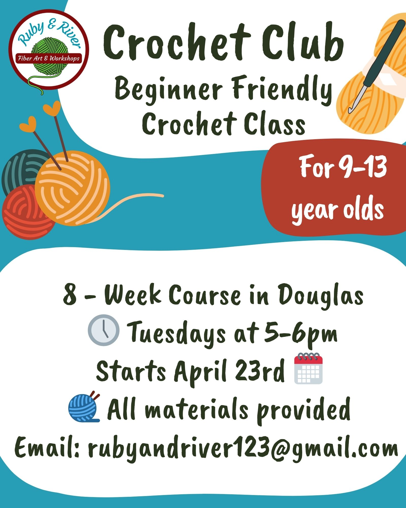
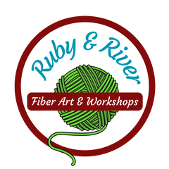
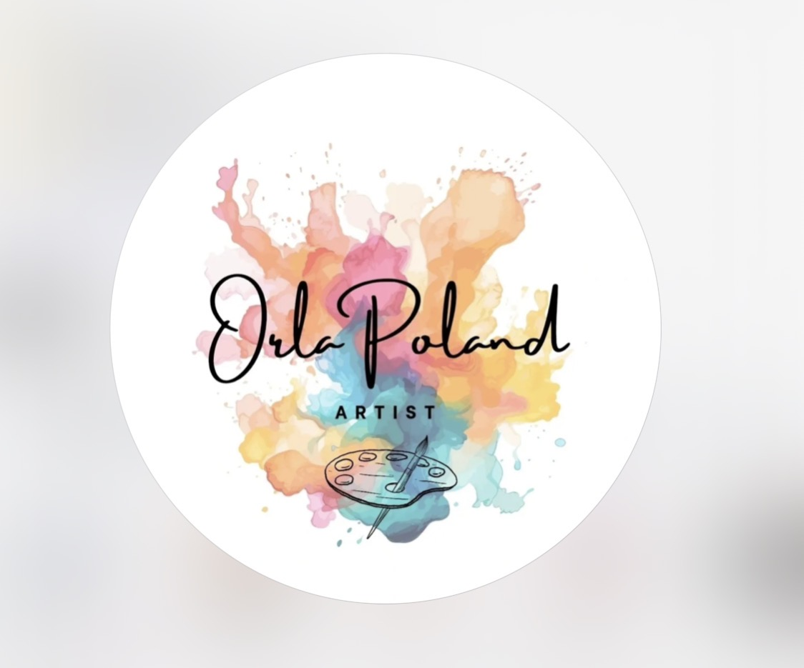

Arts and crafts Classes in Ireland
Explore 42 Arts and crafts classes and activities for kids across Ireland. Arts and crafts classes are most widely available in Dublin, Laois, Meath.
Browse Arts and crafts by county


Doodlebox
Fun, inclusive art school class for younger primary school children, run by a qualified art therapist, covering varied media and materials with an annual student exhibition.
View full details →Doodlebox
Fun, inclusive art school class for older primary school children, run by a qualified art therapist, covering varied media and materials with an annual student exhibition.
View full details →

Art classes for children in Wexford and Lucan, co.Dublin
🎨✨ Let Your Child’s Creativity Shine! ✨🎨 Looking for a fun, inspiring activity for your child? Our art classes are the perfect place for young imaginations to grow! 🖌️ Explore painting, drawing, and creative crafts 🌈 Build confidence and self-expression 👩🎨 Small, friendly groups with personal guidance 🎉 Perfect for beginners and budding young artists alike Whether your child loves to doodle or dreams of becoming the next great artist, our classes are all about creativity, fun, and discovery. 📍 Limited spaces available – don’t miss out! 📩 Message now to book a spot or learn more Let’s create something amazing together! 🎨💫
View full details →

Art in Layers
Discover hands-on creativity at Art in Layers, a studio dedicated to layered and textured art. Enjoy unique workshops including Joomchi, Kinusaiga, printmaking with recycled milk cartons, botanical collage with pressed flowers, pop-up card making, and more.
View full details →

Art workshops & Tea
Relaxed art workshops for adults in Studio 50, based in Carnagh, Co.Armagh, BT60 3HZ. Enjoy 2 hours of calm and creativity with professional artist Trish Redmond.👩🎨 Classes are suitable for beginners, as Trish offers guidance throughout ensuring everyone goes home with a completed artwork. All materials are provided. Come alone or bring a friend and enjoy some time in a relaxed environment with like minded people. Tea, coffee and freshly baked treats served! ☕️🧁 Check Trish Redmonds social media for upcoming events! Studio 50 is also open for private art workshops. Contact Trish for more information.
View full details →

CHILDRENS ART CLASS SATURDAY
CHILDRENS ART CLASSES IN MY STUDIO TALLAGHT, DUBLIN 24 4 WEEKS ART CLASSES FOR CHILDREN AGED 5-11 12PM -1.30PM €60, ALL MATERIALS PROVIDED. A FUN, FREE FLOW ART AND CRAFT ENVIRONMENT
View full details →

Conscious Crafting
Conscious Crafting provides innovative and inclusive crafting & visual arts workshops that promote mindfulness and creativity for people of age 9 & up and all backgrounds. We strive to create a supportive and collaborative environment inspired principles of art therapy that fosters self-reflection, emotional expression and connections. We believe that by introducing simple art and craft techniques around conscious themes, we can inspire positive change and contribute to happier, more aware and connected communities.
View full details →

Crochet Club 9-13 year olds
Relax, Create, Connect Learn crochet with like minded creatives in a supportive and encouraging environment in the heart of Douglas.
View full details →

Expressive Art Group for Kids
Join us each Thursday 5pm- 6pm In Glengoole Community Hall for a creative and engaging Expressive Arts Group where children can explore, imagine, and express themselves in a relaxed and supportive environment. Through a variety of art, craft, sensory, movement, and creative activities, children are encouraged to follow their interests, make their own choices, and develop confidence in their ideas and abilities.
View full details →

Expressive Art Group for Kids in Glengoole
EXPRESSIVE ARTS GROUP FOR KIDS 💫Thursdays in Glengoole A fun and creative expressive arts group for children from preschool age up to 10 years 🎨✨ Our sessions include:🌈 Messy & process art🕺 Movement breaks💛 Creative expression & emotional processing🤝 Friendship building🎉 One hour drop & collect
View full details →

Felted Handbag Workshop
Discover the art of wet felting and create your own unique handbag in this hands-on one day workshop. Designed for both beginners and those with experience in felting, this course will guide you through the entire process of designing and making a stylish felted handbag from start to finish. By the end of this course, you will have created a personalised, handmade felted handbag that reflects your style and creativity. You will also gain the skills and confidence to continue to explore the art of felting on your own Time: 10am to 4pm Venue: Heritage Centre, Creggs, F42 X674 Included: All materials to create your handbag plus tea, coffee and cake
View full details →

Green&Blue Project Launch Gathering
We’re happy to announce that, with the support of Creative Ireland and Westmeath County Council, we are launching Green&Blue — a community arts and ecology project fostering connections between local communities and the natural ecosystems surrounding them through art and creative participation. Our focus is on the plant life surrounding local waterways: an essential and often overlooked part of the Midlands landscape. Through workshops, sketch-walks, field sessions and collaborative activities, the project invites participants to slow down, observe and develop a deeper relationship with the environments they encounter in everyday life. We’re very excited to invite you to the official launch of Green&Blue 🌿 📅 Tuesday, 26 May 🕖 7pm 📍 Cuige Studios (17–23 Dominick St, Mullingar, N91 E7KC) Join us for an offline gathering to meet in person, celebrate the beginning of the project together and talk about Green&Blue. We’ll introduce some of the artists, ecologists and collaborators involved in the project, share upcoming workshops and activities, speak about the ideas behind Green&Blue, and chat about ways to participate over the coming months. Whether you’re interested in art, biodiversity, local landscapes, sketching, environmental topics or simply want to connect — you are very welcome to join us. Free admission
View full details →

I Made It – T-Shirt Painting Workshop
🎨 Discover the Joy of T-Shirt Painting! Our workshops offer a vibrant space to express your creativity and design your own custom tees. ✨ All skill levels welcome!
View full details →
Little Strokes Art Studio
Little Strokes Art Studio is an art studio based in the heart of Co. Down. We offer a range of workshops and art clubs for both children and adults where we encourage creativity to shine.
View full details →

Makerspace@ Bare Food
Unleash your creativity at our Makers workshops in Bare Food Cafe. Curated by the Cottage Market you can Explore Block Printing or Discover Decoupage. Part of Soundtown night time economy offerings in Drogheda on the last Friday of the month March 27th Book through Eventbrite The Cottage Market , Makerspace@ Bare Food
View full details →

One to One Sewing Classes
Sewing Classes both in person or Online All levels available, or customised the Cpurser BEGINNERS SEWING COURSE for Absolute Beginners or Rusty Sewists Learn all about the sewing machine, how it works and setting it up and getting comfortable using it. INTERMEDIATE SEWING COURSE For those who have the basics Learn about measuring the body, reading and Understanding a Dressmaking Pattern. Work through a sewing pattern whilst being coached along the entire process ADVANCED COURSE For those who have the basics Learn Practical Alterations techniques such as Hemming, Zip Replacement, Resizing and Upcycling techniques and project
View full details →

Pottery Classes in Drogheda with Gatothorceramica
5 week pottery course Pottery wheel classes Sculpture classes Glazing classes Experience one day classes Special events for birthday and anniversaries Kids pottery classes Hen parties Clay events Shed group workshops We accept commissions too
View full details →

Rebel Craft Club
Rebel Craft Club We organise social craft sessions throughout the year to help you re-discover your inner artist. Rebel Craft Club is about making space for adults to create, connect, and not take it too seriously. Come for the craft, stay for the chat. This is right place for you if.... You never liked colouring inside the lines You start 10 projects at a time and only finish 1 You think you are not creative Or you simply want to connect with other people in your community Zero experience needed. These are beginner-friendly social craft sessions - the whole point is to have fun with it.
View full details →

Tea, Coffee & Create Painting Classes
🎨 Tea, Coffee & Create – Relaxed Painting Classes in Tullamore ☕ Tea, Coffee & Create is a cosy and welcoming adult painting experience designed for anyone looking to relax, unwind, and get creative in a friendly atmosphere. Our step-by-step guided painting classes are perfect for complete beginners as well as anyone who simply wants to enjoy a calm and creative afternoon. No previous art experience is needed — just come along, enjoy a cup of tea or coffee, and discover your creative side. Each class includes: 🎨 All painting materials provided ☕ Tea, coffee & treats 🖌 Step-by-step guidance 🌸 A relaxed, welcoming atmosphere ✨ Your own finished painting to take home Tea, Coffee & Create is ideal for: 💛 Relaxing “me time” 👩🎨 Trying something new ☕ Catching up with friends 🎁 Creative gifts or experiences 🌸 Meeting like-minded local people We regularly host themed painting workshops and seasonal creative events in Tullamore, with new classes added throughout the year. Perfect for beginners, hobby artists, and anyone looking for a cosy creative experience in Offaly. 📍 Based in Tullamore, Co. Offaly
View full details →
Terra Nova Art Therapy
Healing through creativity - gentle art therapy for all ages to help you balance your life, ease your symptoms, find hope, joy, and rejuvenation. • Overcome Depression & Low Mood • Reduce Stress & Anxiety • Heal from Trauma & PTSD • Find Purpose, Joy & Meaning • Improve Sleep & Daily Balance • Cope with Grief, Guilt & Life Changes • Strengthen Relationships & Parenting • Navigate Retirement & Life Transitions • Restore Work–Life Balance • Reduce Suicidal Thoughts & Build Hope
View full details →

Textile Classes, Embroidery, needlefelting, stitched landscapes, Sashiko and more
Im a textile artist from Dublin with a City+ Guilds in Textiles +Embroidery. I teach Embroidery, Needlefelting, Stitched Landscape Classes, Sashiko and Recycling/Recycling and reusing Classes. Follow my page for updates
View full details →

WEEKLY SEWING CLASSES
Welcome to Ellie’s Sewing Studio 🌷 Based in South Dublin, I run small, friendly sewing classes for beginners and improvers, following the school year from September to June. Each 2-hour class gives you plenty of time to settle in, get creative and really enjoy the process. With small group sizes, you’ll get lots of personal guidance in a relaxed, supportive atmosphere. Whether you’re starting from scratch or building on what you already know, you’ll learn how to make, mend, and restyle your clothes at your own pace. It’s a lovely way to switch off, learn something new and take a bit of time for yourself each week. You’ll need to bring your own sewing machine and materials for your projects. If you don’t have a machine yet, rentals are available (subject to availability). For more information or to book your place, just get in touch. Looking forward to sewing with you! Ellie 💖 ------------------------------------------------------------ Locations & Times 🧵 Dundrum – Taney Parish Centre, Dublin 14 Tuesday: 9.30–11.30am Tuesday: 7–9pm Wednesday: 7–9pm Thursday: 9.30–11.30am 🧵 Knocklyon – Iona Pastoral Centre, Dublin 16 Wednesday: 9.30–11.30am Cost • 3 weeks – €120 (consecutive weeks) • 6 weeks – €200 (consecutive weeks)
View full details →

WeSpark Creative Retreats & Craft Events
WeSpark hosts creative retreats and craft events designed to help you slow down, try something new and meet like-minded people. Our events range from relaxed afternoon workshops to full weekend retreats in Wicklow. Expect hands-on activities like watercolour painting, sewing, collage and seasonal crafts, all done together around the table in a welcoming, supportive atmosphere. A big part of WeSpark is connection. You might arrive on your own, but you’ll be crafting, chatting and learning new skills alongside others who are there for the same reason: to create, unwind and step away from routine. No experience is needed, everything is beginner-friendly and all materials are provided. Upcoming events include: • Creative craft afternoons • Weekend creative retreats Come along, try a new craft and meet your next creative circle.
View full details →

Yoga With Ginni + Moon & Lotus Studio: Classes | Workshops | Retreats
Moon & Lotus Studio | Yoga with Ginni Boutique Yoga Studio | Dunhill, Co. Waterford Welcome to Moon & Lotus Studio, a warm and welcoming boutique yoga and wellness space on the beautiful Copper Coast. Whether you're completely new to yoga or have years of experience, you'll find supportive classes, inspiring workshops, immersive retreats and seasonal wellness events designed to help you move, breathe and feel your best. Our year-round offerings include: Weekly yoga classes for all levels Beginners Yoga Courses Vinyasa Flow, Hatha, Yin, Restorative & Yogalates Breathwork & meditation Pilates with Chloe Full Moon yoga, cacao & crystal bowl sound bath evenings Yoga workshops and specialist masterclasses Day retreats and European wellness retreats* Corporate and private yoga sessions At Moon & Lotus, we believe yoga is for everybody. Our classes focus on improving strength, flexibility, mobility, balance and relaxation while creating a welcoming community where everyone feels at home. Located in Dunhill Eco Park, Co. Waterford (X91 FVF9), with easy parking and a peaceful setting surrounded by nature. Join us now!
View full details →

Colour and Art Kids classes Balbriggan
Colour and art kids caters for children aged between 5-12 years. All aspects of creativity is supported and each child’s individual interest is developed through expressive art. Castlelands Community Centre Wednesday (5-7 years) 4.30pm - 5.30pm Wednesday (8-12 years) 5.30pm - 6.30pm New Term starting in September
View full details →
KidCREATE Arts & Crafts
KidCREATE is dedicated to encouraging children to explore their creativity through arts and crafts. Established with the mission of providing a nurturing and inspiring environment, our classes are designed to impart not only artistic skills but also to enhance cognitive development, problem-solving skills, and self-expression. I am committed to making every class a fun and enriching experience. In addition to our regular classes, we also offer workshops, camps, themed events and parties. At KidCREATE, we believe that every child is an artist in the making. Join us and watch your child’s creativity flourish! Term classes begin 9th September 2024 in Castleknock / Carpenterstown, Dublin 15 area. Visit www.kidcreate.ie for more information.
View full details →Little Lotus
☀️ Summer Fun Alert! Introducing our Kids’ Summer Sessions! 🌈 Calling all little explorers aged 4-8 years! Get ready for a July packed with fun, creativity, new friends, and mindfulness. We are so excited to announce three special daily sessions designed to spark joy and curiosity! ✨ Here’s what your child can look forward to: 🗓 JULY 1ST: Adopt Your Own Unicorn or Dinosaur! 🦄 Choose a plush unicorn or dinosaur to stuff. 📜 Fill out an official birth certificate to take home. 🗓 JULY 2ND: Teddy’s Tea Party 🧸 Bring your favorite teddy for a delightful afternoon. 🎨 Decorate a custom t-shirt for your stuffed friend. 🍵 Enjoy a delicious tea party with savory/sweet snacks and cotton candy lemonade. 🗓 JULY 3RD: Sensory Slime Lab 🧪 Create your very own custom slime! 🤩 Mix in sparkles, colors, and choose a charm to make it perfect. 🧘 Yoga & Mindfulness Each Day Every session will also feature gentle yoga and mindfulness exercises to help your child feel centered and ready for the day's adventure! THE DEETS: 💰 Price: €50 per child per class 🎁 Bundle Deal: €130 for the full 3-day bundle (July 1st-3rd) ⏰ Time: 10:00 A.M. to 12:00 P.M. 🧒 Ages: 4 to 8 years Spaces are limited for these magical sessions! Secure your child’s spot today: 📱 Contact Lyndsey: 0834214811 📧 Email: littlelotusdublin@gmail.com
View full details →

Once Upon a...Fairytale
Step into a world of fairytales with illustrator Lauren O’Hara for a magical interactive craft workshop! Enjoy a read-along of Once Upon a… Fairytale (Macmillan), and learn how to draw a cute Puss in Boots. Young storytellers will also get the chance to invent their own tale for Lauren to illustrate, and finish by crafting their very own fairytale hero. Perfect for creative kids who love stories, drawing, and making their own adventures. Lauren O’Hara is an award-winning illustrator originally from the North of England, now based in Dublin. Her work has been published by Macmillan, Puffin, Penguin Random House USA, Thames and Hudson and Walker Books. Ages 7-12 Location: Axis Ballymun, Main Street, Ballymun, Dublin 9 Y9W0 Link into our website to stay up to date with our classes and activities
View full details →
Tina Mation
For over 30 years, children across Dublin and Meath have enjoyed learning to draw with Tina, the much-loved artist and presenter behind the long-running RTÉ her children’s art television series "Let's Draw with Tina". Tina’s fun and encouraging art classes help children build confidence, creativity and drawing skills in a relaxed and supportive environment. Each one-hour class is carefully designed to guide children step-by-step through exciting drawing and art projects, making it easy for all abilities to take part and enjoy. Tina’s unique teaching method has inspired thousands of children over three decades both on television and in person. All materials are supplied, so children simply arrive ready to create, learn and have fun. Classes take place in: Lusk Donabate Glasnevin Ashbourne Ballyboughal Swords Perfect for children who love drawing, cartoons, creativity and imaginative art activities.
View full details →Kids Art Class Mornington, Philipstown and Ardee
Children will get to try different art and craft projects each week, while socialising and having fun. For children aged 5 and upwards. Classes are 90 minutes long. In three locations: Mornington, Philipstown and Ardee ** Note there is no social media to stay up to date for this group
View full details →
Kids Classes in Kells - Kells Family Resource Centre
Kells Family Resource Centre offers a number of classes/groups to support children and families. Groups/Classes Kells Angels Youth Club (8-12 year old) -Registration is just €10, and there's a €3 fee at each cafe meeting Kells Foróige Youth Cafe (13-17 year old) -Registration is just €10, and there's a €2 fee at each cafe meeting Art classes (5- 12 years) - €10 a class Little Folk - Music with Kyle (3 months to 5 year) Brickx Club (5-12 year old) - €12 per child Kells Coder Dojo (8-17 year old) - Free Teen Neuro Space - Registration €10, and there's a €2 fee at each meeting For More Information see: https://www.kellsfrc.ie/childrenandyouth
View full details →ART JAM STUDIO
Art Jam Studio Killarney is a new creative space for adults to attend once off creative activities such as Paint & Sip and Sculpt & Sip along with drop in sessions during the day to paint your own pottery, mindful art, collage making, splash art. tote bag painting etc. Also providing pottery classes, abstract art classes, mindful & intuitive art classes. There will be a range of drop in creative activities and classes - something for everyone and a unique space in the centre of Killarney town.
View full details →Art Classes/Private mentoring
We offer private art mentoring for 1on1, groups on a regular basis or a once-off. Perfect if you’re looking for a rainy day activity when visiting Westport. We have classes for children and adults throughout the year available in blocks of 4-8 weeks and options for drop in occasionally (more so throughout the summer) whether your a local and want a hand with a project, or you want to master a certain skill or your visiting with your family and want to try something different and spend a couple hours watercolour painting on a Rainy day.. contact us to organise the perfect activity for you. we cover watercolour, acrylic painting, drawing, basic crafts and card making.
View full details →Grannies, Squares and Stitches. A Morning of Creativity and Community
DCCI AUGUST CRAFT MONTH EVENT! Join Emma Jacobs Art at the West Cork Collective for a cozy morning celebrating cottagecore tradition and granny hobbies! We are inviting young adults from all over the area to unroll their yarn, pack up their projects, and bridge the generation gap. Bring your Grannies. Bring your granny squares. Bring your knitting. Whether you are a master knitter, a crochet beginner, or just want to enjoy a cup of tea in good company, this morning is for you. Learn the timeless art of the granny square from local experts, share your skills, or just enjoy the relaxed stitch-and-chat vibe. Event Details: • Date: Saturday, 8 August • Time: 10:00 AM – 1:00 PM • Venue: West Cork Collective • Cost: Free admission (Tea and delicious home baking provided) What to Expect: • Stitch & Chat: A relaxed space to work on your current projects. • Skill Sharing: Learn the art of the granny square from the true experts—our local nans! • Cottagecore Vibes: Cozy acoustic music, endless tea, and artistic company. No granny? No problem! Come along anyway, borrow one of ours, or just bring your creative spirit. All skill levels are entirely welcome. Booking is Essential: Spaces are limited. Secure your spot by contacting Emma: 📧 Email: emma@emmajacobsart.com 📞 Call/Text: 085 826 3872
View full details →Painting and Drawing Classes
Classes run for 9 week terms in my art studio during the year. The terms start in September and end mid June . during the summer I run summer programme's in painting and drawing techniques. I facilitate mosaic courses on weekends and for 9 wk terms . The weekend courses are for one day and 2 day workshops. The courses are suitable for different ability levels from beginners to more advanced. details @ www.artclasseswexford.com
View full details →Art Classes with Caroline - Toddler Art Class
A series of Early Years Art workshops for Toddlers and their Adults exploring the wonders of art making and engaging in a sensory and messy play activity each week. All materials supplied - Tea & Coffee for the Adults Children should wear messy-friendly clothes. Mondays Portlaoise Parish Centre 10.45am-11.30am
View full details →Mindful Present Moments
Mindfulness and Yoga classes for children aged 5 - 12 years. Working through art activities, yoga, breath work and meditation. All supplies provided
View full details →The Yoga Fairy
Join me for a special preschool yoga adventure filled with love, friendship and fairy magic. Our Valentine's Day themed class is designed for little yogis ages 3-4 to celebrate kindness, sharing and self-love. Children will enjoy playful poses, heartwarming stories and gentle breathing exercises that promote mindfulness and joy. Perfect for little hearts full of love and imagination. This is a drop and go event. Children are to wear comfortable clothing and only have to bring a bottle of water. Location is: The Mind & Body House, Abbeyleix, Co Laois on Saturday 14th February 10am-11am.
View full details →Little Artists Ireland
Fun and creative weekly art classes for children, focusing on painting and pencil drawing. Each session helps children build confidence, creativity, and basic art skills in a relaxed and friendly studio. Time & Location: Every Saturday at 10.00 am and 11.15 am (each class is one hour) Art Studio, Clara, Co. Offaly Who can attend: Children aged 4 years and up, including teens. Caregivers: Caregivers are welcome to stay, but do not need to remain for the full class. All materials are included.
View full details →Kids Connect Sligo
Children’s yoga, creative mindfulness arts & crafts, mindfulness Lego. Each one hour class is specifically tailored for fun & learning. The class is split into movement via an obstacle course with a wide variety of gross motor and balance elements. A group ‘best bit of the week’ instilling an ‘attitude of gratitude’! We focus on three yoga poses per week with yoga (pranayama) breathing practice, using props like feathers, bubbles, light ball and straw etc. Dance & move & freeze with yoga songs from Kidding Around Yoga. Mindfulness story & activities by Louise Shannaher. Mindfulness colouring & Lego.. and we finish with our Peace Begins with me song.
View full details →Creation Cup
Art is proven to encourage self-esteem, strength and resilience! What greater gift? Enrol your little artist for a creative 6-week journey today at Creation Cup, classes on Saturdays, at Garter Lane Studio! Book throuh DM or via web form.
View full details →Messy Munchkins by Jen
Messy Munchkins by Jen Join us for fun, hands-on messy play every Tuesday from 10:30 AM to 11:30 AM at Cheekpoint community hall,crossroad, cheekpoint co.Waterford. These classes are perfect for toddlers, with activities designed to stimulate their senses and creativity. Who can attend? Caregivers of all kinds are welcome—mums, dads, grandparents, and childminders. Caregivers are required to stay for the duration of the class, making it a great opportunity to bond and enjoy the experience together. What to bring? Please dress your child in clothes that can get messy, and bring a change of clothes, just in case! All other materials will be provided. We also offer weekend sessions for ages 3-6 years. Contact me for more information! Come join the fun!
View full details →